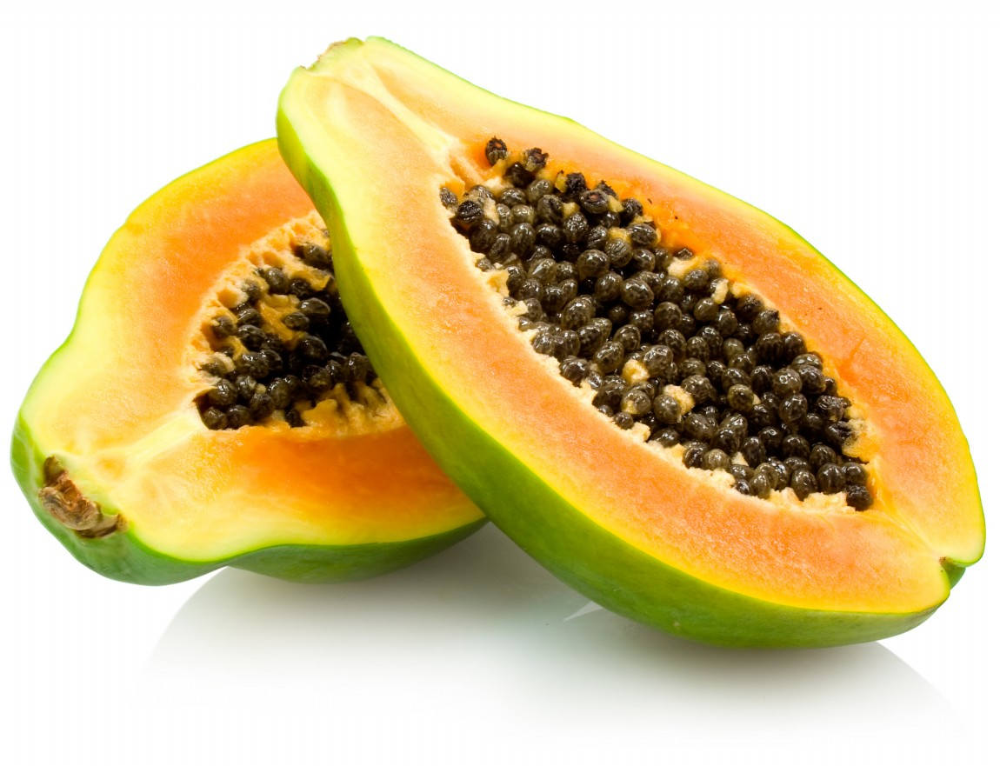

Fruit Flash!
Question 1

Click for helpful hints
- extremely juicy
- have been around since prehistoric times
- usually planted in fields or forest clearings and the plant is very hardy
- enjoyed raw or cooked in pies, jams, and sauces
- leaves are brewed in teas
Please choose the right answer:
Question 2
Click for helpful hints
- originally from southern Mexico
- eaten raw, without skin or seeds
- the black seeds are sometimes ground and used as a substitute for black pepper
- a significant source of vitamin C
- ranked fourth in total tropical fruit production after bananas, oranges, and mango
Please choose the right answer:
Question 3

Click for helpful hints
- originated in the region of modern-day Iran
- french term for the word is source for the military word "grenade"
- plant life extremely long: up to 200 years
- number of seeds can vary from 200 to 1400
- drought-tolerant